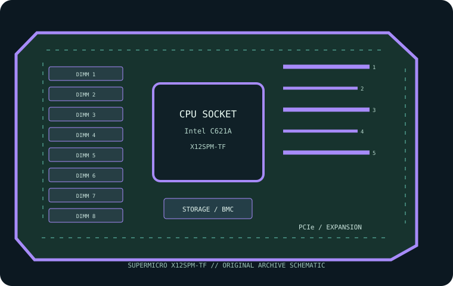

[ INDIVIDUAL COMPONENT // MOTHERBOARDS ]
Supermicro X12SPM-TF
Compact LGA4189/C621A platform with eight ECC RDIMM/LRDIMM slots and dual 10GbE. This record is restricted to the exact printed SKU; confirm the physical PCB revision before installation or firmware service.

MODEL / REVISION: X12SPM-TF is the exact manufacturer model/SKU documented here. Match the PCB revision and assembly label printed on the physical board before choosing firmware or CPU support; revision-specific differences must not be inferred from a similar model or suffix.
Specifications
| Exact board / SKU | Supermicro X12SPM-TF — exact product suffix retained; verify PCB revision from board silkscreen. |
|---|---|
| PCB revision | The manufacturer reference identifies this exact model SKU, not a single board assembly revision. Read the revision silk-screen on the physical PCB; no unverified revision number is assumed. |
| CPU socket / platform | One 3rd-generation Intel Xeon Scalable in LGA4189 (Socket P+), within qualified CPU and TDP list. |
| Chipset / controller | Intel C621A |
| Form factor | Micro-ATX server board. |
| Memory / ECC | Eight DDR4 sockets, ECC RDIMM/LRDIMM up to DDR4-3200; listed capacity up to 2 TB. Optane PMem 200-series support is CPU/configuration dependent. |
| PCIe topology | Two PCIe 4.0 x16; one PCIe 4.0 x8; two PCIe 4.0 x8 SlimSAS connectors; check lane assignment/cabling. |
| Storage | Four PCIe 4.0 x4 NVMe lanes via SlimSAS, one M.2 SATA/PCIe 3.0 x4 socket and chipset SATA; see port map. |
| Network / BMC | Dual 10GbE; IPMI 2.0 BMC/KVM and dedicated management LAN. |
| Firmware / platform support | Use X12SPM-TF BIOS/BMC and CPU list; no cross-flash from related variants. |
Compatibility and revision notes
Use X12SPM-TF BIOS/BMC and CPU list; no cross-flash from related variants. Populate memory only in the documented module class and channel order; ECC does not make UDIMM/RDIMM classes interchangeable. Check chassis clearance, cooler, power connectors, risers, storage cabling and BMC network isolation against the model manual.
Socket shape and chipset branding alone do not guarantee CPU compatibility. Confirm exact CPU/stepping, minimum BIOS, memory QVL, PCIe lane sharing and board revision before service.
Preservation and repair
Record PCB silk-screen, serial label, BIOS/BMC versions, MAC addresses, attached risers and cables, and test conditions. Use ESD-safe handling and the vendor socket procedure; never apply firmware for a visually similar SKU.
Sources & further reading
- Supermicro X12SPM-TF — manufacturer product specificationsPrimary model-specific reference for board platform, memory, expansion and onboard features.
- Supermicro X12SPM-TF — manufacturer manual and support resourcesConsult matching manual, CPU/memory data and BIOS/BMC resources for exact product and PCB revision.
Manufacturer documentation for the exact product and printed PCB revision takes precedence over this summary.